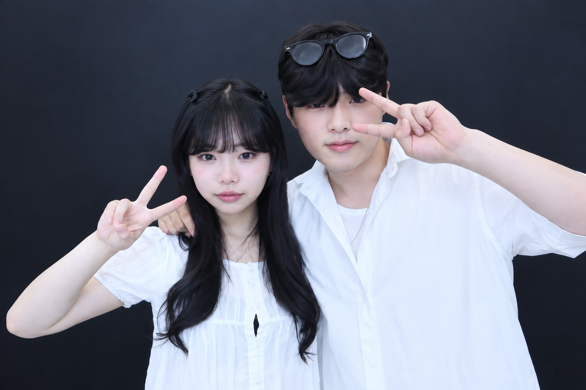
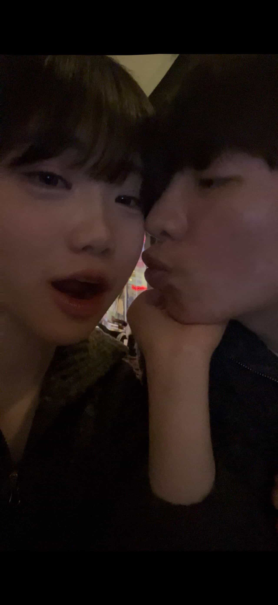
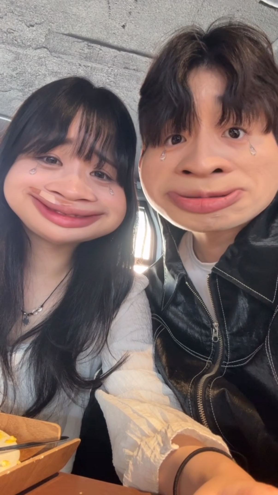

재현 ❤ 은수



은숭이 안농~! 이렇게 편지 쓰는 경우는 또 처음이네 ㅋㅋㅋㅋ 우리가 벌써 1년이 됐넹! 1년 동안 진짜 많이 웃고 많이 싸우고 서로 많이 의지하고 응원해주고 했던게 생각나는데 우리가 1년이라는 시간동안은 서로 더 가까워지는 시간이였던것 같애 처음만난게 엊그제 같은데 벌써 1년이고 아직 우리가 서로의 생각이나 이해할수없는 부분이 많지만 그건 우리가 앞으로도 맞춰야되는 부분은 숙제인것같애 지금은 1년 이지만 앞으로의 2년, 3년, 4년 쭉쭉 결혼까지 가보자!! 보잘것없는 가진것도 없는 나를 사랑해주고 이해해주고 부족함을 채워주고 해서 너무 고마웡 자기도 또 힘들었부분도 있었을텐데 그걸 이겨 내고 같이 맞춰주고 하고 엄청 미안함과 고마움 밖에 없넹 진짜 나의 영원한 걸프렌드가 되주고 있어서 감사하넹 그리고 자끼! 혼자 끙끙앓지 말고 나랑 같이 그 문제들도 해결하고 하자! 또 제일 중요한거는 자기자신 사랑하기! 항상 자기자신한테 오늘도 수고했다. 난 이세상에서 제일 이쁘다! 한마디라도 해줘 자신을 사랑해야 마음이 여유가 있는거라 근데 진짜로 자기가 이세상에서 제일 이쁘고 제일 공주같고 만화속 캐릭터 같으니깐 알고 있엉! ㅎ 앞으로도 항상 좋은 날만 있을 수는 없겠지만, 힘든 날이 와도 서로 손 놓지 않고 지금처럼 하나씩 맞춰가면서 오래오래 함께했으면 좋겠당! 갈대같이 쭉 사랑하장~ 항상 고맙고 젤 루 사랑해앵~❤️ 나도 자기가 힘들어하는 고집이나, 이기적임 많이 없애고 노력하께 자기가 힘들면 안되니깐! 나도 많이 노력하고 할겡 나를 만나줘서 너무 고마웡 그리구 1년 축하행 은숭ㅎ 세상에서 제일 사랑해~❤️ 늘 함께하장 뿅~!